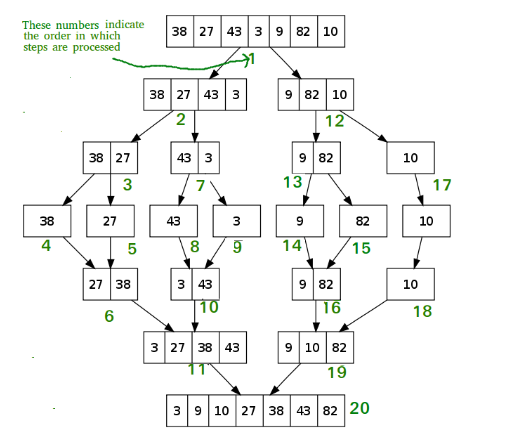
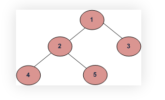

Функциональное программирование
Встроенные функции
Ссылки: Документация по Built-in FunctionsВстроенные функции
В среде Python без дополнительных операций импорта доступно более сотни встроенных объектов, в основном, функций и исключений. Для удобства функции условно разделены по категориям:
Функции преобразования типов и классы: coerce, str, repr, int, list, tuple, long, float, complex, dict, super, file, bool, object
Числовые и строковые функции: abs, divmod, ord, pow, len, chr, unichr, hex, oct, cmp, round, unicode
abs(x) Модуль числа x. Результат: |x|.divmod(x, y) Частное и остаток от деления. Результат: (частное, остаток).
pow(x, y[, m]) Возведение x в степень y по модулю m. Результат: x**y % m.
round(n[, z]) Округление чисел до заданного знака после (или до) точки.
ord(s) Функция возвращает код (или Unicode) заданного ей символа в односимвольной строке.
chr(n) Возвращает строку с символом с заданным кодом.
len(s) Возвращает число элементов последовательности или отображения.
oct(n), hex(n) Функции возвращают строку с восьмеричным или шестнадцатеричным представлением целого числа n.
cmp(x, y) Сравнение двух значений. Результат: отрицательный, ноль или положительный, в зависимости от результата сравнения.
unichr(n) Возвращает односимвольную Unicode-строку с символом с кодом n.
Функции обработки данных: apply, map, filter, reduce, zip, range, xrange, max, min, iter, enumerate, sum
Функция map()
Синтаксис:map(func, iterables)map вытаскивает каждый элемент из итерируемого объекта iterables и к этому элементу применяет функцию func.
Пример:
a = [1, -2, -3, 4]
b = list(map(abs, a)) # вернет список из модулей элементов списка a
b = map(abs, a) вернёт map объект, чтобы увидеть значение этого объекта, нужно применить к нему функцию преобразования типов объекта.
Скобки после func не пишутся
Синтаксис:
filter(func, iterables)Работает следующим образом. Если функция func возвращает True для текущего элемента итерируемого объекта iterables, то этот элемент входит в filter. Если же func возвращает False, то текущий элемент игнорируется.
Скобки после func не пишутся
В качестве первого аргумента могут применяться встроенные или собственные функции, lambda функции а также методы итерируемого объекта.
Функция zip()
Ссылки: Из официальной документацииСинтаксис:
zip(*iterables, strict=False)Эта функция возвращает zip-объект кортежей, в котором i -й кортеж содержит i -е элементы параллельных итерируемых последовательностей (список, кортеж, множество или словарь). Длина результирующей последовательности равна длине самой короткой из последовательностей-аргументов. По существу она преобразует информацию из несколько итерируемых объектов в один список.
Чтобы вытащить список из этого zip-объекта, его нужно преобразовать в список: list(zip(iterable1, iterable2, iterable3, ...)) .
Пример:
fruits = ['apple', 'banana', 'lime']
numbers = [1, 2, 3]
zip_fruits_numbers = zip(fruits, numbers)
print(type(zip_fruits_numbers)) # <class 'zip'>
print(zip_fruits_numbers) # <zip object at 0x7f3b0d39c1c0>
print(zip(fruits, numbers)) # <zip object at 0x7f3b0d39c200>
# вывод кортежей из zip-объекта
print('вывод кортежей из zip-объекта')
for kortej in zip_fruits_numbers:
print(kortej)
# вывод списка из zip-объекта
print('вывод списка из zip-объекта')
list_fruits_numbers = list(zip_fruits_numbers)
print(list_fruits_numbers) # []
print(list(zip(fruits, numbers))) # [('apple', 1), ('banana', 2), ('lime', 3)]
list_fruits_numbers = list(zip(fruits, numbers))
print(list_fruits_numbers) # [('apple', 1), ('banana', 2), ('lime', 3)]
# вывод словаря из zip-объекта
print('вывод словаря из zip-объекта')
dict_fruits_numbers = dict(zip_fruits_numbers)
print(dict_fruits_numbers) # {}
print(dict(zip(fruits, numbers))) # {'apple': 1, 'banana': 2, 'lime': 3}
|
Вывод:
<class 'zip'>
<zip object at 0x7f3b0d39c1c0>
<zip object at 0x7f3b0d39c200>
вывод кортежей из zip-объекта
('apple', 1)
('banana', 2)
('lime', 3)
вывод списка из zip-объекта
[]
[('apple', 1), ('banana', 2), ('lime', 3)]
[('apple', 1), ('banana', 2), ('lime', 3)]
вывод словаря из zip-объекта
{}
{'apple': 1, 'banana': 2, 'lime': 3}
{'apple': 1, 'banana': 2, 'lime': 3}
Неожиданно, что когда сохраняю результат zip-функции в переменную zip_fruits_numbers, потом при попытке получить список или словарь от этой переменной получаю пустоту, а кортежи через цикл получить можно. Связано это с тем что zip-объект является итератором.Итераторы предназначены для генерации данных "на лету" ровно один раз, не более. Если вы хотите получить данные из него во второй раз, вам нужно либо сохранить все итерированные данные в другом списке, либо запустить итератор заново. В тех случаях, когда вам нужно считывать данные из файлов или выполнять другие неприятные действия, чтобы повторно получить этот итератор, вероятно, лучше всего просто сохранить эти данные в списке, когда они будут сгенерированы.
Транспонирование матрицы
Другой подход к zip() заключается в том, что он преобразует строки в столбцы, а столбцы - в строки. Это похоже на транспонирование матрицы.
Следует учитывать, что iterables (последовательности), передаваемые в zip(), могут иметь разную длину; иногда по замыслу, а иногда из-за ошибки в коде, который подготовил эти повторяющиеся значения. Python предлагает три разных подхода к решению этой проблемы:
- По умолчанию функция zip() останавливается, когда заканчивается самая короткая итерируемая последовательность. Она игнорирует оставшиеся элементы в более длинных итерируемых таблицах, сокращая результат до длины самой короткой итерируемой таблицы:
list(zip(range(3), ['fee', 'fi', 'fo', 'fum'])) [(0, 'fee'), (1, 'fi'), (2, 'fo')]
- функция zip() часто используется в тех случаях, когда предполагается, что повторяющиеся значения имеют одинаковую длину. В таких случаях рекомендуется использовать параметр strict=True. Результат такой же, как у обычной функции zip():
list(zip(('a', 'b', 'c'), (1, 2, 3), strict=True)) [('a', 1), ('b', 2), ('c', 3)]В отличие от поведения по умолчанию, оно вызывает ValueError, если один итерируемый объект исчерпывается раньше других:for item in zip(range(3), ['fee', 'fi', 'fo', 'fum'], strict=True): print(item) (0, 'fee') (1, 'fi') (2, 'fo') Traceback (most recent call last): ... ValueError: zip() argument 2 is longer than argument 1Без аргумента strict=True любая ошибка, приводящая к появлению итераций разной длины, будет устранена, что, возможно, проявится как труднодоступная ошибка в другой части программы. - Более короткие повторяющиеся элементы можно дополнить постоянным значением, чтобы все повторяющиеся элементы имели одинаковую длину. Это делается с помощью itertools.zip_longest().
Крайние случаи: при использовании единственного итерационного аргумента функция zip() возвращает итератор из 1 кортежа. При отсутствии аргументов она возвращает пустой итератор.
Советы:
- Порядок вычисления итераций слева направо гарантирован. Это позволяет использовать идиому для кластеризации ряда данных в группы длиной n с использованием zip(*[iter(s)]*n, strict=True). При этом один и тот же итератор повторяется n раз, так что каждый выходной кортеж содержит результат n обращений к итератору. В результате входные данные делятся на n фрагментов длиной.
- zip() в сочетании с оператором * можно использовать для распаковки списка:
x = [1, 2, 3] y = [4, 5, 6] list(zip(x, y)) [(1, 4), (2, 5), (3, 6)] x2, y2 = zip(*zip(x, y)) x == list(x2) and y == list(y2) True
Функция range
Функция range обычно применяется в цикле и позволяет перебрать какой-нибудь объект типа список по его индексу.
for index range(len(spisok):
print spisok(index)
функция range принимает от одного до трех аргументов. Если аргумент всего один, она генерирует список чисел от 0
(включительно) до заданного числа (исключительно).Если аргументов два, то список начинается с числа, указанного первым аргументом.
Если аргументов три - третий аргумент задает шаг
>>> print range(10) [0, 1, 2, 3, 4, 5, 6, 7, 8, 9] >>> print range(1, 10) [1, 2, 3, 4, 5, 6, 7, 8, 9] >>> print range(1, 10, 3) [1, 4, 7]Третий аргумент может быть и отрицательным, служит для вывода элементов справа налево:
>>> for i in range(10, 5, -1): ... print(i)Получим 10, 9, 8, 7, 6
Функция xrange() - аналог range(), более предпочтительный для использования при последовательном доступе, например, в цикле for или с итераторами. Она возвращает специальный xrange -объект, который ведет себя почти как список, порождаемый range(), но не хранит в памяти все выдаваемые элементы.
Функция enumerate()
Возвращает объект enumerate. iterable должен быть последовательностью, итератором или каким-либо другим объектом, поддерживающим итерацию. Метод __next__() итератора, возвращаемый функцией enumerate(), возвращает кортеж, содержащий число (начиная с start, которое по умолчанию равно 0) и значения, полученные в результате итерации по iterable.enumerate(iterable[, start=0]) -> enumerate-objectГде sequence - любой итерируемый объект.
start=0 : int Начальное значение счётчика.
>>> seasons = ['Spring', 'Summer', 'Fall', 'Winter'] list(enumerate(seasons)) [(0, 'Spring'), (1, 'Summer'), (2, 'Fall'), (3, 'Winter')] >>> list(enumerate(seasons, start=1)) [(1, 'Spring'), (2, 'Summer'), (3, 'Fall'), (4, 'Winter')]
Функция в частности применяется в случаях, когда необходим счётчик количества элементов в последовательности.
Позволяет избавиться от необходимости инициализировать и обновлять отдельную переменную-счётчик:
sequence = [1, 2, 7, 19]
# Сравните:
idx = 0
for item in sequence:
print(idx)
idx += 1
Вывод:
0
1
2
3
# и
for idx, item in enumerate(sequence):
print(idx)
Вывод:
0
1
2
3
Функции определения свойств: hash, id, callable, issubclass, isinstance, type
Функции для доступа к внутренним структурам: locals, globals, vars, intern, dir
Функции компиляции и исполнения: eval, execfile, reload, __import__, compile
Функции ввода-вывода: input, raw_input, open
Функции для работы с атрибутами: getattr, setattr, delattr, hasattr
Функции-"украшатели" методов классов: staticmethod, classmethod, property
Прочие функции: buffer, slice
Алгоритмы:
Ссылки: Структуры данных и алгоритмы в PythonАлгоритмы — это пошаговые инструкции для выполнения задач. Они могут быть простыми, как сортировка списка чисел, или сложными, как алгоритмы машинного обучения.
Алгоритмы поиска:
Ссылка: книга Cuantum Алгоритмы и структуры данных на Python 2024 год стр. 149Линейный поиск
Бинарный поиск
Бинарный поиск — это эффективный алгоритм поиска, который работает только с отсортированными списками. Выполните поиск в отсортированном массиве, многократно деля интервал поиска пополам. Начните с интервала, охватывающего весь массив. Если значение ключа поиска меньше, чем элемент в середине интервала, сузьте интервал до нижней половины. В противном случае сузьте его до верхней половины. Повторяйте проверку до тех пор, пока значение не будет найдено или интервал не окажется пустым.
def binary_search(arr, x):
low = 0
high = len(arr) – 1
mid = 0
while low <= high:
mid = (high + low) // 2
if arr[mid] < x:
low = mid + 1
elif arr[mid] > x:
high = mid – 1
else:
return mid
return -1
# Пример использования
my_list = [1, 2, 3, 4, 5, 6, 7, 8, 9]
result = binary_search(my_list, 4)
print(f'Элемент найден на индексе {result}')
|
Алгоритмы сортировки
Ссылка: книга Cuantum Алгоритмы и структуры данных на Python 2024 год стр. 128
Сортировка пузырьком
Сортировка пузырьком — это простой алгоритм сортировки, который многократно проходит по списку, сравнивая соседние элементы и меняя их местами, если они находятся в неправильном порядке. Этот алгоритм не является самым эффективным, но он прост в реализации и понимании.
def bubble_sort(arr):
n = len(arr)
for i in range(n):
for j in range(0, n-i-1):
if arr[j] > arr[j+1]:
arr[j], arr[j+1] = arr[j+1], arr[j]
return arr
# Пример использования
my_list = [64, 34, 25, 12, 22, 11, 90]
sorted_list = bubble_sort(my_list)
print(sorted_list)
|
Сортировка по выбору
Этот алгоритм сортирует массив, многократно находя минимальный элемент (в порядке возрастания) из неотсортированной части и помещая его в начало. На каждой итерации выбирается минимальный элемент (в порядке возрастания) из неотсортированного подмассива и перемещается в отсортированный подмассив.
import sys
A = [64, 25, 12, 90, 22, 11]
# перебор всех элементов массива
for i in range(len(A)):
# нахождение минимального элемента
# в несортированном списке
min_idx = i
for j in range(i+1, len(A)):
if A[min_idx] > A[j]:
min_idx = j
# замена элемента с минимальным значением на первый элемент
A[i], A[min_idx] = A[min_idx], A[i]
print("Отсортированный список:")
for i in range(len(A)):
print(f"{A[i]}")
|
Отсортированный список: 11 12 22 25 64 90Временная сложность — O (n**2), так как имеется два вложенных цикла. Алгоритм хорошо сортирует списки малого и среднего размера. Помимо эффективности, сортировка выбором проста и легка в реализации. Он особенно эффективен для небольших списков или ситуаций, когда размер входных данных ограничен. Однако у сортировки выбором есть определенные недостатки. По сравнению с более сложными методами сортировки, такими как быстрая сортировка или сортировка слиянием, она медленнее, поэтому не очень хорошо подходит для сортировки больших объемов данных или сценариев, в которых скорость имеет решающее значение.
Пузырьковая сортировка
Это простейший алгоритм сортировки, который работает путем многократной перемены мест соседних элементов, если они расположены в неправильном порядке.
def bubble_sort(arr):
n = len(arr)
# перебор всех элементов списка
for i in range(n):
# последние i элементов на месте
for j in range(0, n-i-1):
# обход элементов от 0 до n-i-1
# поменять местами, если найденный элемент
# больше следующего
if arr[j] > arr[j+1]:
arr[j], arr[j+1] = arr[j+1], arr[j]
arr = [64, 34, 25, 12, 22, 11, 90]
bubble_sort(arr)
print("Отсортированный список:")
#for i in range(len(arr)):
for i in arr:
#print(f"{arr[i]}")
print(i)
|
# Отсортированный список: # 11 # 12 # 22 # 25 # 34 # 64 # 90
Сортировка вставкой
Чтобы отсортировать массив размера n по возрастанию, используйте сортировку вставкой:- Переберите список от arr[1] до arr[n].
- Сравните текущий элемент с его предыдущим.
- Если ключевой элемент меньше своего предшественника, сравните его с предыдущими элементами. Переместите больший элемент на одну позицию вверх, чтобы освободить место для поменявшегося элемента.

def insertion_sort(arr):
# перебор от 1 до len(arr)
for i in range(1, len(arr)):
key = arr[i]
# Переместить элементы arr[0..i-1], которые больше ключа,
# на одну позицию вперед от их текущей позиции
j = i-1
while j >= 0 and key < arr[j] :
arr[j + 1] = arr[j]
arr[j] = key
j -= 1
arr = [12, 11, 60, 13, 20, 5, 6]
insertion_sort(arr)
for i in range(len(arr)):
print(f"{arr[i]}")
|
5 6 11 12 13 20 60Данный алгоритм способен эффективно сортировать списки небольшого и среднего размера. Его средняя и наихудшая временная сложность со ставляет О(п**2). Сортировка вставками может показаться неэффективной, однако в сценариях, когда список частично отсортирован, она превосходит все остальные алгоритмы. В лучшем случае, когда список уже отсортирован, временная сложность данного алгоритма достигает О(n). Это связано с тем, что сортировка вставками обрабатывает каждый элемент списка только раз, не требуя никаких перестановок. Таким образом, производительность данного алгоритма зависит от начального состояния списка и в определенных ситуациях может быть весьма высокой.
Сортировка слиянием
Этот алгоритм делит входной массив на две половины, вызывает себя для двух половин, а затем объединяет две отсортированные половины. Для слияния двух половин используется функция merge(). Merge(arr, l, m, r) — это ключевой процесс, который предполагает, что arr[l..m] и arr[m+1..r] отсортированы, и объединяет два отсортированных подмассива в один.
MergeSort(arr[], l, r)
Если r > l
1. Найдите среднюю точку, чтобы разделить массив на две половины:
середина m = l+ (r-l)/2
2. Вызовите mergeSort для первой половины:
вызов mergeSort(arr, l, m)
3. Вызовите mergeSort для второй половины:
вызов mergeSort(arr, m+1, r).
4. Объедините две половины, отсортированные на шаге 2 и 3:
вызов merge(arr, l, m, r)

def merge_sort(arr):
if len(arr) > 1:
# находим середину списка
mid = len(arr)//2
# делим список
L = arr[:mid]
# на две половины
R = arr[mid:]
# сортируем первую
merge_sort(L)
# сортируем вторую
merge_sort(R)
i = j = k = 0
# копируем данные во временные списки L[] и R[]
while i < len(L) and j < len(R):
if L[i] < R[j]:
arr[k] = L[i]
i += 1
else:
arr[k] = R[j]
j += 1
k += 1
# проверяем, что ничего не потеряли
while i < len(L):
arr[k] = L[i]
i += 1
k += 1
while j < len(R):
arr[k] = R[j]
j += 1
k += 1
def print_list(arr):
for i in range(len(arr)):
print(arr[i], end=" ")
print()
if __name__ == '__main__':
arr = [12, 11, 40, 20, 13, 5, 6, 7]
print("Изначальный список:", end="\n")
print_list(arr)
merge_sort(arr)
|
Изначальный список: 12 11 40 20 13 5 6 7 Отсортированный список: 5 6 7 11 12 13 20 40
Алгоритм быстрой сортировки или "разделяй и властвуй"
Он выбирает элемент за основу и разбивает заданный массив вокруг него. Существует много различных версий этого алгоритма, которые выбирают основу разными способами:- Всегда выбирать последний элемент в качестве основы (реализовано ниже).
- Выбирать случайный элемент в качестве основы.
- Выбрать медиану в качестве основы.

ShellSort
Является разновидностью сортировки вставкой.Концепция временной сложности
Временная сложность — это показатель, который позволяет получить общее представление о взаимосвязи между количеством входных данных (обычно обозначаемых как п) и количеством шагов, выполняемых алгоритмом. Почему важно разбираться во временной сложности? Представьте, что при сутствуете на магическом шоу, где два фокусника утверждают, что умеют сортировать колоду карт. Один говорит, что использует линейный алгоритм сортировки, а это значит, что время, необходимое для сортировки карт, увеличивается пропорционально их количеству. Время работы алгоритма сортировки, который использует второй фокусник, судя по всему, при увеличении количества карт растет экспоненциально. Если бы вам предложили доверить одному из этих фокусников сортировку колоды из миллиона карт, то кого бы вы выбрали? Временная сложность может помочь вам принять обоснованное решение в подобных ситуациях, позволяя понимать, как эффективность алгоритма зависит от размера входных данных.Нотация «О большое»
Нотация «О большое» — математическое представление временной сложности. Это ценный инструмент для анализа эффективности алгоритмов, дающий представление о скорости их выполнения. Используя эту нотацию, вы можете принимать обоснованные решения о том, какие алгоритмы использовать для различных сценариев. Выбор правильного алгоритма для конкретной задачи может оказать значительное влияние на эффективность и производительность ваших решений. Ниже представлены некоторые распространенные обозначения нотации «О большое» и соответствующие им описания.- 0(1) — постоянное время. Время работы алгоритма остается неизменным независимо от размера входных данных. Это очень эффективно и желательно во многих случаях.
- О(1о§ п) — логарифмическое время. Алгоритмы с такой временной сложностью уменьшают размер входных данных с каждой итерацией. Классический пример такого алгоритма — двоичный поиск.
- О(п) — линейное время. В алгоритмах с линейной временной сложностью время выполнения линейно увеличивается по мере увеличения размера входных данных. Это общий сценарий для многих алгоритмов.
- О(п log и) — линейно-арифметическое время. Эта временная сложность часто встречается в алгоритмах сортировки, таких как сортировка слиянием и быстрая сортировка. В этих алгоритмах соблюдается баланс между временной и пространственной сложностью, позволяющий достичь оптимальной производительности.
- О(и2), О^пР) и т. д. — полиномиальное время. Алгоритмы с полиномиальной временной сложностью имеют вложенные циклы, что приводит к значительному увеличению времени выполнения при увеличении раз мера входных данных.
Простые алгоритмы — пузырьковая сортировка, сортировка выбором и сортировка вставками — имеют временную сложность О(и2), вследствие этого не очень эффективны при работе с большими наборами данных. Однако они могут хорошо работать с маленькими наборами.
Расширенные алгоритмы — быстрая сортировка, сортировка слиянием и пирамидальная сортировка — имеют временную сложность O(n log п), поэтому часто используются при работе с большими наборами данных.
Хеширование
Ссылка: книга Cuantum Алгоритмы и структуры данных на Python 2024 год стр. 156ДЕРЕВЬЯ И ГРАФЫ: ИЕРАРХИЧЕСКИЕ СТРУКТУРЫ ДАННЫХ
Ссылка: книга Cuantum Алгоритмы и структуры данных на Python 2024 год стр. 185 Глава 6Изучив эти иерархические структуры, вы сможете использовать сложные алгоритмы, что даст вам возможность эффективно решать самые разные задачи во множестве областей.
Деревья: типы и методы обхода
Деревья представляют собой тип структуры данных, которая повторяет структуру иерархического дерева. Они начинаются с корневого значения, которое выступает в качестве начальной точки, и разветвляются на под деревья, связанные с корнем родительскими узлами.
Методы обхода:
Когда говорят о поиске в ширину (Breadth First Search, BFS) и глубину (Depth First Search, DFS), имеется в виду порядок обхода узлов двоичного дерева. При обходе в глубину вы сначала опускаетесь к низу дерева, а потом идете в сторону, а при обходе в ширину — наоборот, начинаете с корня и спускаетесь сначала к его узлам-потомкам, обходите их, потом спускаетесь к потомкам потомков, обходите их, и так далее.

Если взять в качестве примера двоичное дерево на этом рисунке, при BFS-подходе порядок обхода узлов будет следующим: 1, 2, 3, 4, 5.
В случае с DFS возможны разные варианты последовательности посещения узлов. Все зависит от того, будет это прямой, обратный или центрированный обход. Например, прямой обход выдаст 1, 2, 4, 5, 3.
Виды деревьев
Двоичные деревья
Каждый узел в этой структуре может иметь до двух дочерних элементов, обычно называемых левым и правым. Двоичные деревья являются одной из основных структур данных в информатике и находят широкое применение в различных приложениях. Они позволяют эффективно взаимодействовать с данными, поэтому активно используются в таких операциях, как поиск, сортировка и организация
информации. Кроме того, двоичные деревья лежат в основе более сложных типов деревьев, таких как двоичные деревья поиска и AVL-деревья, что повышает их полезность и производительность.
Двоичные деревья поиска
Двоичные деревья поиска (Binary Search Tree, BST) — структура данных, используемая для представления данных с иерархической организацией, в которой все узлы соответствуют следующему свойству: левый дочерний узел меньше родительского, а правый дочерний — больше. Это свойство по зволяет выполнять поиск, вставку и удаление за время O(log п), что делает двоичные деревья весьма эффективными. BST высоко ценятся в области информатики и структур данных. Они предлагают метод иерархического хранения и организации данных, позволяя быстро получать доступ к ним и взаимодействовать с ними. Соблюдение принципов BST помогает поддерживать баланс и оптимизацию, делая работу по созданию и анализу алгоритмов эффективной.
Сбалансированные деревья
Деревья AVL и красно-черные деревья — два популярных примера самобалансирующихся деревьев двоичного поиска. Они специально разработаны для поддержания баланса путем автоматической корректировки своей структуры. Благодаря этой регулировке высота дерева всегда находится под контролем, позволяя предотвращать снижение производительности и обеспечивать эффективность поисковых операций. Способность к самобалансировке делает деревья АѴЬ и красно-черные деревья надежным и эффективным решением
для хранения и поиска данных.
N-арные деревья
Это тип дерева, в котором каждый узел может иметь несколько дочерних. Эта характеристика делает такое дерево менее строгим, чем двоичное, и позволяет более гибко представлять иерархические структуры данных. Такие деревья универсальны и особенно полезны в сценариях, где данные естественным образом образуют сложную иерархию с множеством ветвей, позволяя эффективно организовывать и извлекать данные и управлять ими, а также анализировать данные в различных областях, таких как информатика, биология и сетевые системы.
В-деревья
В-деревья — структура данных, используемая в базах данных и файловых системах. Они дают возможность хранить огромные объемы данных и управлять ими. Благодаря своим уникальным свойствам В-деревья позволяют эффективно выполнять операции вставки, удаления и поиска, что делает их очень ценным компонентом различных приложений. В базах данных В-деревья отвечают за быстрый доступ и поиск данных, повышая общую производительность. В файловых системах они способствуют беспрепятственной организации файлов и управлению ими, повышая эффективность операций.
Графы
Ссылка: книга Cuantum Алгоритмы и структуры данных на Python 2024 год стр. 193Динамическое программирование
Алгоритмы поиска пути в робототехникеДинамическое программирование — ключевой подход в робототехнике, особенно в алгоритмах поиска пути. Оно позволяет роботам ориентироваться в сложных условиях, разбивая задачу перемещения на более мелкие и управляемые подзадачи. При поиске пути алгоритмы динамического программирования используют ранее определенные оптимальные решения, чтобы проложить лучший маршрут для робота, учитывая препятствия, изменчивость рельефа и другие важные факторы. Эта методология позволяет роботам двигаться эффективно и безопасно, оптимизируя маршруты и сокращая ненужные затраты энергии. Такой подход не только повышает общие показатели эффективности роботов, но и улучшает их способность адаптироваться к различным ситуациям и препятствиям, с которыми они могут столкнуться.
Сравнение динамического программирования и стратегии «разделяй и властвуй»
К этому моменту вы могли заметить, что стратегия «разделяй и властвуй» и динамическое программирование чем-то похожи. В этом подразделе мы обсудим, чем они отличаются друг от друга. В обоих подходах задачи разбиваются на более мелкие, однако в динами
ческом программировании результаты этих подзадач сохраняются, чтобы не пришлось проводить повторные вычисления. Это различие важно при решении задач, в которых подзадачи перекрываются, как это часто бывает в задачах оптимизации. В методе «разделяй и властвуй» подзадачи решаются независимо друг от друга, а их решения объединяются, чтобы можно было получить окончательное решение. В динамическом программировании используется подход «снизу вверх», при котором подзадачи решаются систематическим образом и сохраненные результаты используются для эффективного решения более крупных задач. Таким образом, несмотря на то что оба метода направлены на решение сложных задач, динамическое программирование — более эффективный и оптимизированный подход, поскольку позволяет использовать данные, полученные при решении небольших подзадач.